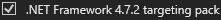

Welcome
Want to debug RimWorld? This application will get you started.
If you have trouble or find bugs, join my Discord.
Please follow all the steps exactly

Brrainz
Want to debug RimWorld? This application will get you started.
If you have trouble or find bugs, join my Discord.
Please follow all the steps exactly
Brrainz
Visual Studio Community
Download: https://visualstudio.microsoft.com/vs/community/
When installing, check at least these two options:

You will also need:

JetBrains dotPeek
Download: https://www.jetbrains.com/decompiler/download/
After installation, dotUltimate will ask you to install a lot of things.
For now, only choose:

Unity Hub
Download: https://unity3d.com/get-unity/download
After installation, do not start choosing a Unity Editor yet.
We need to match the Unity version to your RimWorld version. Before we use
the Hub, we need to locate your RimWorld installation.
Finding your game folder
We found your RimWorld folder!
| Directory | |
| Unity Version |
Many people have RimWorld in non-standard locations. Help to locate it:
If that does not work, you can manually locate your RimWorld folder
Copy as Path and paste it here:Unity Editor
We found the correct Unity installation for your RimWorld version:
Waiting until Unity Hub completes the installation ...
Using JetBrains dotPeek (1 of 2)
Let's create a project from the RimWorld code
Using JetBrains dotPeek (2 of 2)
Export the assembly to a new Visual Studio project:
Use default export settings and export the project to the following location:
Exporting will take a while...
Using the Unity Editor files we replace some RimWorld files
Files we will replace/add:
\Assembly-CSharp.pdb
\UnityPlayer.dll
\WindowsPlayer.exe
\WinPixEventRuntime.dll
\MonoBleedingEdge\EmbedRuntime\mono-2.0-bdwgc.dll
Files we will edit:
\RimWorldWin64_Data\boot.config
\Assembly-CSharp.ini
Click the button below to start the copy process
Use Visual Studio for debugging RimWorld
Now that you have a source code project linked to RimWorld you
can open it and start debugging RimWorld. Follow these steps to get going:
Edit > Go To > Go To All, enter togglepaused and press
enter.
Debug > Attach Unity Debugger then double click on the line that will appear: Use Steam to quickly revert your changes
The fastest way to revert your changes is to remove the RimWorld folder and reinstall it via Steam.
This will remove any changes. You can then simply go back to step 9 to patch it again.
 Please consider donating to support my efforts!
Please consider donating to support my efforts!
https://patreon.com/pardeike